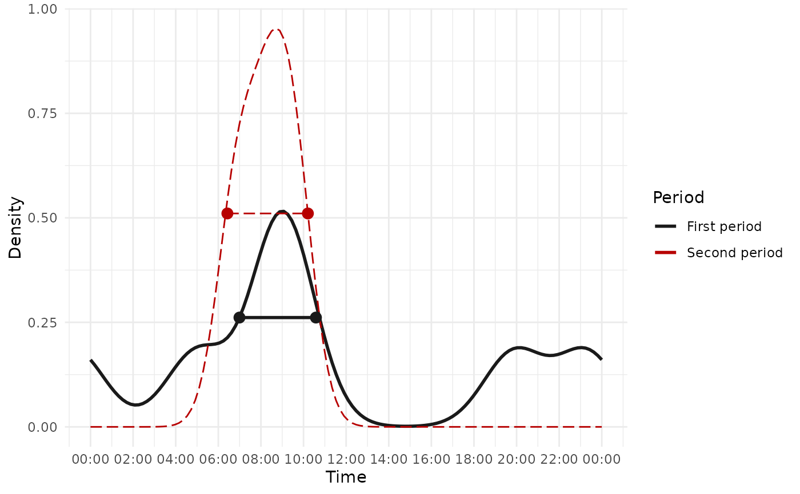
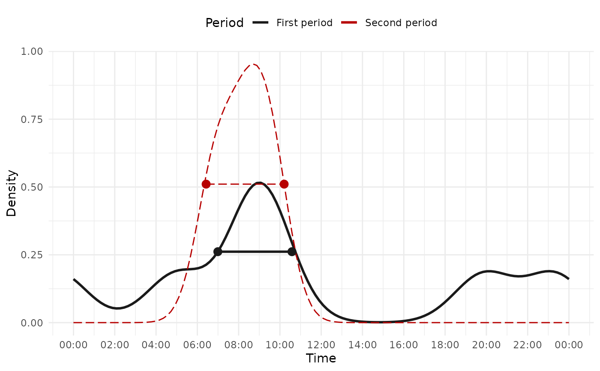
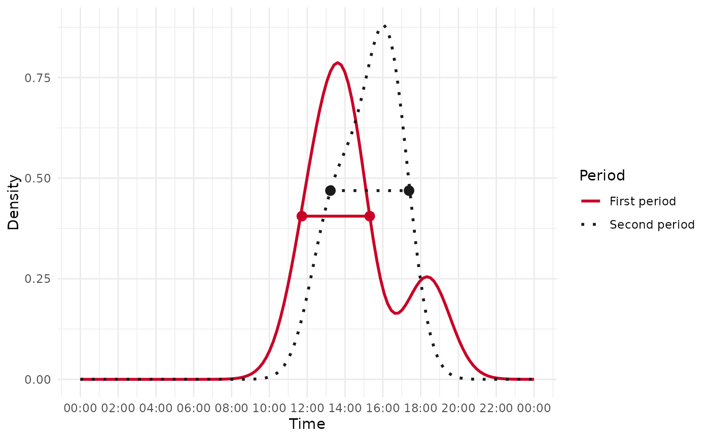

Calculate the temporal shift of one species' activity over two periods
Source:R/ct_temporal_shift.R
ct_temporal_shift.RdEstimates and analyzes the temporal shift in the activity of a species between two time periods using kernel density estimation. The activity distributions are compared and the magnitude, direction, and (optionally) a bootstrap confidence interval for the shift size are returned.
Usage
ct_temporal_shift(
first_period,
second_period,
convert_time = FALSE,
xscale = 24,
xcenter = c("noon", "midnight"),
n_grid = 128,
kmax = 3,
adjust = 1,
width_at = 1/2,
format = "%H:%M:%S",
time_zone,
n_boot = 999,
boot_ci = 0.95,
plot = TRUE,
linestyle_1 = list(),
linestyle_2 = list(),
posestyle_1 = list(),
posestyle_2 = list(),
period_names = c("First period", "Second period"),
legend_title = "Period",
...
)Arguments
- first_period
A numeric vector of activity times in radians for the first period.
- second_period
A numeric vector of activity times in radians for the second period.
- convert_time
Logical. If
TRUE, converts times to radians before analysis.- xscale
A numeric value to scale the x-axis. Default is 24 for representing time in hours.
- xcenter
A string indicating the center of the x-axis. Options are
"noon"(default) or"midnight".- n_grid
An integer specifying the number of grid points for density estimation. Default is 128.
- kmax
An integer indicating the maximum number of modes allowed in the activity pattern. Default is 3.
- adjust
A numeric value to adjust the bandwidth of the kernel density estimation. Default is 1.
- width_at
Numeric. Fraction of peak density at which the activity window width is measured (default
0.5, i.e. half-maximum).- format
Character. Input time format (default
"%H:%M:%S"). Only used whenconvert_time = TRUE.- time_zone
Character. Time zone for conversion. Required when
convert_time = TRUE.- n_boot
Integer. Number of bootstrap resamples used to compute a confidence interval for the shift size. Set to
0to skip bootstrapping (default999).- boot_ci
Numeric. Confidence level for the bootstrap CI, strictly between 0 and 1 (default
0.95).- plot
Logical. If
TRUE, prints and returns a ggplot comparing the activity distributions of the two periods.- linestyle_1
List. Line style for the first period's density curve. Accepts:
linetype,linewidth,color.- linestyle_2
List. Line style for the second period's density curve. Accepts:
linetype,linewidth,color.- posestyle_1
List. Marker style for the first period's activity-range indicator. Accepts:
shape,size,color,alpha.- posestyle_2
List. Marker style for the second period's activity-range indicator. Accepts:
shape,size,color,alpha.- period_names
Character vector of length 2 giving the legend labels for the first and second periods (default
c("First period", "Second period")). For example,c("Dry", "Rainy").- legend_title
Character. Title shown above the period legend (default
"Period").- ...
Additional arguments (currently unused).
Value
When plot = FALSE: a tibble. When plot = TRUE: a list whose first element
is the tibble and whose $plot element is a ggplot2 object. The tibble contains:
First period rangeStart and end of the active window for the first period.
Second period rangeStart and end of the active window for the second period.
Shift size (in hour)Absolute difference in activity-window duration between periods.
Displacement (in hour)Signed shift of the activity window along the day, measured at its midpoint: positive means the second period is active later, negative earlier. Unlike
Shift size(a duration change), this captures a pure time shift, so a window that slides without changing length hasShift sizenear 0 but a non-zeroDisplacement.Shift CI lower (XX%)/Shift CI upper (XX%)Bootstrap CI bounds (only when
n_boot > 0).MoveDirection/type of shift:
"Forward","Backward","Enlarged","Contracted","Constant","Forward Edge","Backward Edge","Contracted Edge (Max)","Contracted Edge (Min)", or"Undefined".
Examples
library(ggplot2)
# Using radians as input
first_period <- c(1.3, 2.3, 2.5, 5.2, 6.1, 2.3)
second_period <- c(1.8, 2.2, 2.5)
result <- ct_temporal_shift(
first_period, second_period, plot = TRUE, xcenter = "noon", n_boot = 100,
linestyle_1 = list(color = "gray10", linetype = 1, linewidth = 1),
posestyle_1 = list(color = "gray10"),
linestyle_2 = list(color = "#b70000", linetype = 5, linewidth = 0.5),
posestyle_2 = list(color = "#b70000")
)

result
#> [[1]]
#> # A tibble: 1 × 7
#> `First period range` `Second period range` `Shift size (in hour)`
#> <chr> <chr> <dbl>
#> 1 06:59:32 - 10:34:58 06:25:31 - 10:12:18 0.189
#> # ℹ 4 more variables: `Displacement (in hour)` <dbl>,
#> # `Shift CI lower (95%)` <dbl>, `Shift CI upper (95%)` <dbl>, Move <chr>
#>
#> $plot
 #>
# Customize the returned plot
result$plot + theme(legend.position = "top")
#>
# Customize the returned plot
result$plot + theme(legend.position = "top")

# Using time strings as input
first_period <- c("12:03:05", "13:10:09", "14:08:10", "14:18:30", "18:22:11")
second_period <- c("13:00:20", "14:20:10", "15:55:20", "16:03:01", "16:47:00")
result <- ct_temporal_shift(
first_period, second_period,
convert_time = TRUE, format = "%H:%M:%S", time_zone = "UTC"
)
